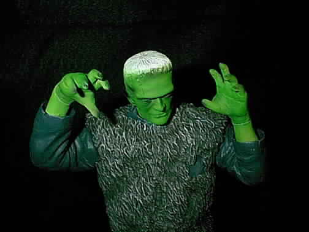
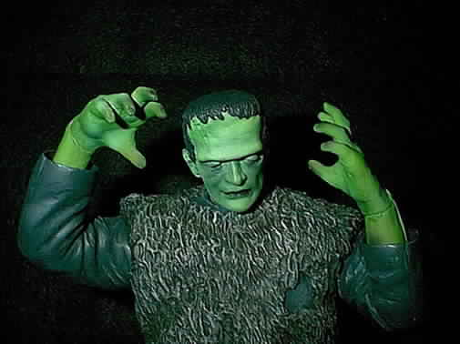
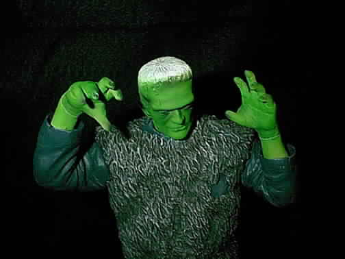
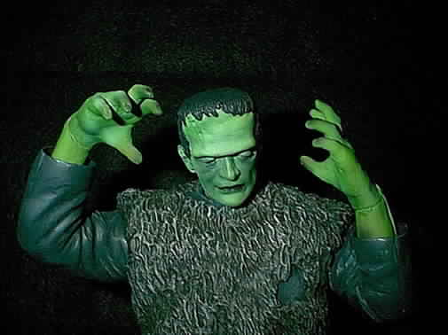

Presents


By Walter J. Evans

The classic monsters are among my favorite creations and this version of Frankensteins monster is no exception. I liked the version Geometric released, but Id have to say, I like this one the most. I think the pose is cool and the base that comes with this figure complements it nicely. Sculptor Brian Hamilton has done and excellent job in capturing Mr. Karloffs likeness. He has given this figure a great deal of character. I feel this kit conveys the monsters tortured soul and the pain that hes endeared. I really enjoy seeing different versions of characters released, even if it is of the same actor. I know why another Frankenstein. Well to me there is enough room in this hobby for a repeat of characters, especially if its one of this caliber. If youre a fan of Boris Karloff or the film its self this is defiantly a must have. Brian Hamilton is definitely a name we need to keep and eye out for.
If interested please check out www.darkcarnivalmodels.com this kit retails for only a hundred bucks so its definitely priced to sell. Plus youll be able to checkout their other great garage kits. The Son of Frankenstein comes in seven clean cast resin pieces; the head, two hands and arms, full body and base. The resin www.darkcarnivalmodels.com uses is heaver than most resins on the market. As I said before this is one excellent sculpture, the hands and head can be positioned in many different positions. Which can make everyones kit unique.
Now on to the painting my friends, I just got finished watching Son of Frankenstein and thought I'd do something different with this figure. I've seen a few figures painted as if they are in a Black and White movie. So I thought this would be a neat figure kit to paint this way. With this in mind I still wanted color so my finial painted scheme is a mixture of dark and light colors. The colors where kept almost Black or White. But you can see the use of color in the figure. The head and hands received the classic greenish tint as well.


The figure was washed in hot soapy water and left to dry over night. The Monster was then premiered. The pants where painted flat Black then dry brushed with a dark Gray.
Highlights where added with two more progressively lighter shades of Gray. This was achieved by mixing the Dark Gray with White. Franks boots where then base coated in Black. Then dry brushed with Burnt Umber to give them a leathery look. Once this was complete the lower body receive a light wash of Mossy Moor Brown. This was done to darken the colors a little. Badger Airbrush Company manufactures this color in their Freak Flex line. Its a nice Greenish Brown color; it was also used as the base coat for the vest Mr. Karloff is wearing. Once base coated, the vest was then dry brushed with progressively lighter shades of a whitish cream color. This was achieved by mixing white with a very small amount of burnt umber. Then more white was added to lighten the color for each progressively lighter application. Three lighter shades where added to give the fur that much more depth. His shirt was base coated with a mixture of Mars Black and Dark Gray. Then White was added to the base coat to achieve the lighter highlight color. This lighter shade of gray was dry brushed over the high points of the figures shirt.

 




Mr. Karloffs head and hands received a coat of Freak Flexs Suntan Flesh. Next the head and hands where then lightly misted with Freak Flex Greenzilla. This was lightly applied to the flesh areas. The Greenzilla was then lightened with White then applied to the top of the brow, nose, cheekbones and the knuckles and muscles of the hands. Once complete the shadow areas where added with a dark brown made with black and Burnt Umber. His eyes and brow area, hallows of the cheeks, fingertips and between them where lightly shadowed. Once again the original highlight color was again lightened with White and applied to the same highlight areas but with a lighter touch. This combined the colors for a nice Greenish flesh tone. Once complete the figure was sprayed with Testors Dull Coat. Next all his little extras where taken care of the wounds on his head and hands where first airbrushed with Hammer Horror Red-Dry. This was applied to the wounds then lightly feathered outward. This was to give the surrounding area a reddish infected look. Then the Red was mixed with a touch of White and applied to the inside of the wound. Next his head clamps received a basecoat Black then painted Silver. I then painted the figure with Testors Dull-Coat to seal the kit. When I received the figure in the mail I dropped the head and broke off the neck bolts. So to fix this little mess-up I drilled a hole in each section that had the bolts, then inserted a nail and cut the end off with my Dremal.

This completes the painting of the classic figure, as I said, before its a must have for fans of Boris Karloffs and his portrayals of the Frankenstein monster. Plus thisfigure is licensed through the Karloff estate. This is the first sculpture of Brian Hamilton for www.Darkcarnivalmodels.com but it's not the last keep and eye out for his Thing kitfrom the classic sci-fi movie. Plus www.Darkcarnivalmodels.com has and abundance of new and exciting kit's coming out so keep checking there web site for any updates. Until next time happy modeling.